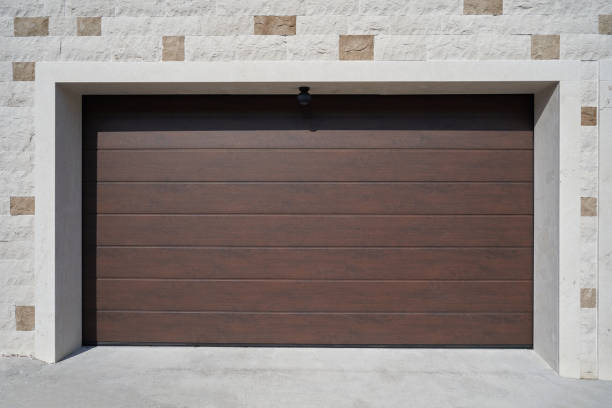
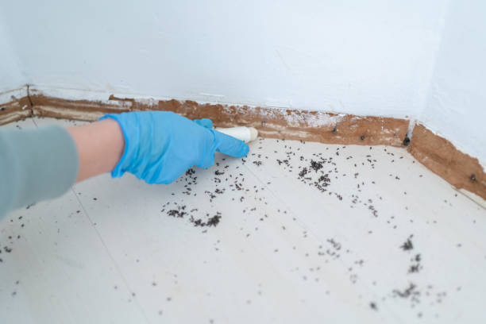
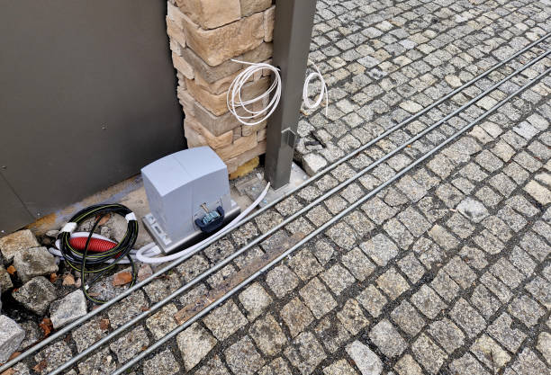

Macon Illinois
info@asapstatewideseptic.pro
Macon Illinois
info@asapstatewideseptic.pro

Ensure a properly functioning septic system with expert services from our trusted team in Macon Illinois . Fast, affordable, and reliable septic tank cleaning and repair solutions for your home.
Click Here To Call Us (877) 848-1711When it comes to maintaining your septic system, trust the experts at septic service for all your septic service needs in Macon Illinois . Our team specializes in providing top-tier septic tank installation, cleaning, pumping, and repair services designed to keep your home or business running smoothly.
As a locally owned and operated business, we pride ourselves on delivering fast, efficient, and affordable septic services in Macon Illinois . We understand the importance of a well-maintained septic system, and with years of experience in the industry, we know how to ensure its optimal function, preventing costly issues in the future.
Whether you need routine maintenance or emergency repairs, septic service is your go-to provider in Macon Illinois . Our highly trained technicians use advanced equipment to diagnose and address any septic issue, from minor leaks to complete system overhauls. We also offer environmentally friendly waste disposal solutions, so you can feel confident in your choice.
Why Choose septic service in Macon Illinois ?
Experienced and knowledgeable technicians
24/7 emergency services
Affordable pricing and transparent quotes
Eco-friendly solutions
Commitment to customer satisfaction
For reliable septic services in Macon Illinois contact septic service today. Let us handle your septic system with the care it deserves!
Residential & commercial septic service
Quality services at affordable prices
Immediate 24/ 7 emergency services


When it comes to septic tank installation in Macon Illinois trust the experts to ensure your system is installed professionally and efficiently. At septic service, we specialize in providing top-notch septic tank services tailored to your needs. Our experienced team uses state-of-the-art equipment to offer reliable septic system installations that comply with local regulations and ensure long-term functionality.
Septic tank installation is a crucial part of maintaining a healthy home or business environment. With years of experience in the industry, we understand the importance of a well-designed and properly installed septic system. Our team conducts thorough site assessments to determine the best location for your septic tank, ensuring optimal performance and minimizing potential issues.
We offer a wide range of septic tank sizes and systems suitable for residential and commercial properties across Macon Illinois . Whether you're building a new home or upgrading your existing septic system, we ensure the installation is handled with precision and care. Our skilled technicians take the time to explain your options, helping you make an informed decision.
At septic service, we prioritize customer satisfaction and strive to deliver prompt, professional septic tank installation services in Macon Illinois and surrounding areas. Contact us today for expert septic services that guarantee peace of mind.
Residential & commercial septic service
Quality services at affordable prices
Immediate 24/ 7 emergency services
Septic emergencies can arise unexpectedly, and quick response is crucial to minimizing impact on your business. At septic service, we provide emergency septic services for commercial properties ready to tackle urgent issues efficiently.
Our skilled professionals are available around the clock, equipped to handle emergencies like backups, leaks, and system failures. We pride ourselves on our rapid response times and effective solutions, protecting your property and operations. Trust septic service to ensure your septic system is back up and running in no time.

Regular inspections are vital for the proper functioning of septic systems in commercial buildings. At septic service, we specialize in septic system inspections for commercial properties identifying potential issues before they escalate.
Our skilled inspectors utilize advanced technology to conduct thorough evaluations, providing you with detailed reports on system performance and maintenance suggestions. We focus on minimizing disruptions to your business by scheduling inspections at your convenience. Schedule with septic service for dependable inspections that support the longevity of your septic system.
Managing sewage effectively is crucial in any business operation. At septic service, we specialize in designing and installing sewage treatment systems tailored to your commercial needs. Our experienced team assesses your property's requirements and provides innovative solutions that are efficient and compliant with local standards. We focus on delivering high-quality installations that support your business's sustainability objectives. Choose us for your sewage treatment needs and benefit from our expertise and dedication to service.

At septic service, we offer a range of specialized septic services designed to address unique challenges. Our team of experts is equipped to handle various septic issues, ensuring your system operates efficiently. Whether it's locating a septic tank, controlling odors, or providing pumping services for rural properties, we have the knowledge and tools to deliver effective solutions. By choosing us for specialized septic services, you're partnering with a company that values expertise and customer satisfaction in every service.

At septic service, we understand that each septic situation is unique, which is why we offer specialized septic services tailored to meet diverse needs in Macon Illinois . From design to maintenance and emergency repairs, our team is equipped with the expertise needed to handle every challenge.
Our specialized services include unique solutions like septic tank location services, odor control strategies, and rural property pumping. We believe that every property deserves a septic solution that fits its unique characteristics and challenges.
With our commitment to customer service and quality, you can count on septic service to provide specialized septic services that are not just effective but also environmentally friendly, promoting sustainability in your area.
Unpleasant odors from your septic system can indicate underlying issues. At septic service, we offer effective septic tank odor control solutions that address the root causes of odors. Our expert technicians conduct thorough assessments to identify and rectify issues that contribute to foul smells, ensuring a more pleasant environment around your property. By choosing us, you ensure not only comfort but also the health of your septic system, backed by our dedication to quality service.

Unpleasant odors from your septic system can be more than just a nuisance; they can indicate underlying issues. At septic service, we specialize in septic tank odor control solutions designed to eliminate foul smells and address the core issues causing the problems.
Our team conducts thorough assessments to identify the source of odors, whether it's a build-up of solids, improper ventilation, or other issues. We provide practical solutions tailored to your specific situation, ensuring that odors are mitigated effectively.
Choosing septic service for odor control means selecting a partner that understands the importance of a clean and pleasant environment. We take pride in our customer service, working to ensure your home or business maintains a fresh atmosphere while safeguarding your septic system.

Aerobic septic systems can offer greater efficiency for properties with high water usage. Our installation and repair services in Macon Illinois focus on ensuring these systems operate at peak performance, allowing for effective treatment of wastewater.
When you choose us for aerobic septic system installation or repair, you gain access to skilled technicians trained in advanced septic technologies, committed to delivering exceptional service. Let us help you achieve a sustainable solution tailored to your property’s specific needs.

For businesses, especially in the food industry, managing grease buildup is essential to avoid clogs and health hazards. At septic service, we provide thorough septic system grease trap cleaning and maintenance services in Macon Illinois tailored for commercial properties.
Our team ensures that all grease traps are maintained to prevent overflow and breakdowns, helping you avoid costly repairs and regulatory fines. Our flexible scheduling minimizes disruption to your operations. Choose septic service for thorough grease trap services that keep your business running smoothly.
Years Experience
Expert Technicians
Satisfied Clients
Compleate Projects
At ASAP Statewide Septic, we understand that your septic system is crucial to the health and functionality of your home or business. Serving all cities in Macon Illinois we offer prompt, reliable, and expert septic services that ensure your system operates efficiently. Whether you need routine maintenance, septic repairs, or emergency services, we are your go-to solution for all things septic.
Our experienced team of licensed professionals is dedicated to providing top-quality services tailored to your specific needs. We specialize in thorough septic inspections, cleaning, repairs, and installations. By using the latest technology and best industry practices, we ensure that your septic system stays in peak condition year-round, helping you avoid costly repairs down the line.
Why waste time with unreliable service providers when ASAP Statewide Septic offers quick response times, competitive pricing, and unmatched customer care? Our commitment to excellence ensures that each job is done right the first time, giving you peace of mind knowing that your septic needs are in expert hands. We also pride ourselves on our transparency, providing clear, honest estimates and keeping you informed every step of the way.
Serving all cities in Macon Illinois ASAP Statewide Septic is here for all your septic service needs. Trust us for fast, efficient, and professional service whenever you need it. Choose ASAP Statewide Septic today for unmatched expertise and reliability.
In today's world, ensuring your home has a functioning and efficient septic system is paramount. Residential septic services encompass a range of essential tasks designed to keep your septic system running smoothly, from installations to regular maintenance and emergency repairs. Our team has extensive experience and specializes in residential septic systems, catering to the unique needs of homeowners .
When you choose us, you choose reliability, professionalism, and affordability. We utilize the latest industry technology to provide preventative maintenance that extends the lifespan of your septic system, saving you money and hassle down the line. Regular inspections and maintenance services we provide help identify potential issues before they become major problems, ensuring peace of mind for you and your family.
Installing a septic tank is a significant investment for any homeowner. It's crucial to choose a reliable service that understands local regulations and environmental considerations. At septic service, we provide comprehensive septic tank installation services ensuring your system is designed to meet your household needs effectively.
Our certified specialists assess your property to determine the best tank size and location. We work with high-quality materials and follow industry standards to guarantee a durable installation that lasts for years. Furthermore, we educate our clients about proper tank use and maintenance to prevent future complications. Our combination of technical expertise and excellent customer service sets us apart as the leading choice for septic tank installation in Macon Illinois .
Installing a septic tank is a significant investment for any homeowner. At septic service, we offer expert septic tank installation services designed to meet the unique needs of your property. Our highly trained technicians assess your land and soil conditions to recommend the most suitable tank size and type for optimal performance.
Our installation process adheres to local regulations and best practices to ensure compliance and reliability. We focus on using high-quality materials and advanced tools to provide seamless installations that can withstand the test of time. Our commitment to quality means fewer repairs and maintenance issues down the line, giving you reassurance that your septic system will function as intended for years.
Moreover, we provide post-installation guidance and maintenance tips to help you manage your new septic system effectively. Investing in a septic tank installation with septic service means prioritizing long-term efficiency and value for your property .
Regular septic tank pumping is essential for preventing backups and maintaining system efficiency. At septic service, we provide thorough septic tank pumping services that help extend the life of your system. Our trained technicians follow a detailed pumping process that ensures every inch of your tank is effectively cleared of sludge and solid waste. We advise our customers on the appropriate pumping schedule based on their system usage and local guidelines. By choosing us, you're taking proactive steps toward a healthy and functioning septic system.
The health of your septic system largely depends on regular cleaning and maintenance, and our services are designed to extend the lifespan of your system while preventing harmful backups. We provide comprehensive cleaning solutions that include jetting, descaling, and preventive maintenance checks to keep your system functioning optimally.
Our trained professionals use the right techniques tailored to your specific system's needs. Ensuring your septic tank is clean is not just about good practice, it’s about safeguarding your home and family’s health. With our unwavering commitment to customer satisfaction, we guarantee that your system is treated with utmost care and professionalism.
Don't wait for a problem to arise; proactive septic tank cleaning and maintenance is key to long-term efficiency. At septic service, we offer thorough cleaning services that remove sludge and scum, ensuring that your septic tank operates efficiently. Regular maintenance not only prolongs the life of your system but also helps prevent costly repairs.
Our maintenance plan includes detailed inspections and cleaning, along with valuable tips on how to care for your septic system. We understand the local environment and can adjust our services to the specific needs of homes . By partnering with us, you benefit from expert advice and services designed to enhance your system’s performance.
Choosing septic service means relying on a team that is dedicated to your satisfaction. Our skilled professionals are trained to execute cleaning procedures with precision, and we ensure that all waste is disposed of properly and in line with environmental regulations.
Regular septic system inspections are crucial for ensuring your system operates efficiently and safely. At septic service, we provide comprehensive septic system inspections that identify potential issues before they escalate. Our certified inspectors assess the condition of your tank, lines, and drains, providing a thorough evaluation that allows you to make informed decisions regarding repairs or upgrades.
Our inspection process follows industry best practices and local regulations, ensuring that you receive an accurate and reliable assessment. We use advanced diagnostic equipment to identify problems that may not be visible, providing you with peace of mind that your system is in good working order.
When you choose our inspection services, you can trust that we prioritize quality and transparency. We thoroughly explain our findings and recommend solutions tailored to your needs. Our commitment to customer service in Macon Illinois ensures you feel confident in your septic system after our visit.
Sometimes, septic systems reach the end of their lifespan and require complete replacement. At septic service, we specialize in septic tank replacement services, ensuring a hassle-free transition to a new system. Our expert team assesses your current system’s condition and identifies the best replacement options tailored to your land and needs.
We guide you through the entire replacement process, from initial assessment and permitting to installation and post-installation check-ups. Our professionals are trained to handle the complexities of replacing a septic tank, ensuring all work is performed to industry standards and local regulations.
Choosing septic service for septic tank replacement means investing in quality. Our installations focus on high-quality materials and workmanship, ensuring longevity and reliability. We prioritize your satisfaction, ensuring that your replacement tank serves your property effectively for years to come.
If you’re experiencing septic system issues but can’t pinpoint the cause, our septic system troubleshooting services can help. Our team of experienced professionals knows how to diagnose complex problems through detailed examinations and assessments to get your system back on track.
We understand the nuances behind septic systems, which allows us to offer tailored solutions to resolve your troubles effectively. Our proactive approach ensures minimal disruption and optimal results. By choosing our troubleshooting services, you partner with a team that emphasizes transparency and communication throughout the process.
A properly functioning septic system starts with an efficient pump. Our septic system pump installation services ensure that your system performs optimally and reduces the risk of issues down the line. We take great care in evaluating your needs to recommend the best pumps on the market.
When you choose us, you are opting for expertise, reliability, and exceptional customer service. Our team is well-versed in local codes and regulations, ensuring that your installation complies with all requirements. We take pride in our craftsmanship and guarantee the highest standards of work.
The last thing you want is a septic backup ruining your day, and our prevention and solution services in Macon Illinois are tailored to protect your home from such disasters. We employ preventative strategies, including regular inspections, proper usage education, and routine maintenance to ensure you avoid those costly messes.
Our team is dedicated to providing exceptional service, promptly addressing any potential issues before they escalate. Trust in our knowledge and expertise to keep your septic system functioning smoothly and your home free from distress.
In the heart of any thriving business lies a commitment to excellence, and that includes maintaining an effective septic system. Our commercial septic services in Macon Illinois are tailored to meet the demands of businesses of all sizes, providing everything from routine maintenance to emergency repairs.
Our team understands the complexities involved in commercial septic systems, and we employ a proactive approach to ensure compliance with health and safety standards. With our rapid response times and commitment to quality, we help ensure your business operations run smoothly without interruption.
A commercial property requires specialized septic services to ensure reliable operations and compliance with regulations. At septic service, we offer a full range of commercial septic services, tailored to meet the high demands of businesses in Macon Illinois .
Our services include installation, maintenance, pumping, and repairs designed to handle the complexities of commercial septic systems. Our experienced technicians understand the unique challenges faced by different industries, from restaurants to retail spaces, and we provide customized solutions that promote efficiency and compliance with local codes.
Choosing us means selecting a team that provides expert consultation and quick response times. We work closely with your business to set up preventive maintenance schedules and offer emergency services to minimize disruptions to your operations. Trust septic service for all your commercial septic service needs .
Regular septic tank pumping is vital for commercial properties to prevent backups and ensure a smooth operation. Our commercial septic tank pumping services in Macon Illinois are designed for businesses seeking prompt and reliable waste management solutions. We offer expertly executed pumping services that minimize disturbances to your daily operations.
Our technicians are prompt, professional, and equipped with the latest tools to effectively pump and maintain your septic tank. Choose us for on-time and efficient service that adheres to local regulations and industry standards, ensuring your business remains compliant and operational.
Managing waste effectively is crucial for food service and hospitality businesses. At septic service, we offer specialized grease trap and commercial waste removal services designed to keep your operations compliant and sanitary. Our experienced technicians are trained in the best practices for grease trap cleaning and removal, ensuring your systems perform optimally. By choosing us, you benefit from our commitment to customer satisfaction and compliance with health regulations, safeguarding your business from waste-related issues.
Every business has unique waste management needs. At septic service, we offer septic system design and consultation services tailored for commercial properties. Our experts provide in-depth consultations to design customized septic systems that meet your specific operational demands while adhering to local regulations. With our comprehensive expertise, we ensure your system is both efficient and compliant. By partnering with us, you gain a valuable ally in optimal waste management for your business.
Designing an efficient septic system is crucial for any commercial operation. At septic service, we offer specialized septic system design and consultation services tailored specifically for businesses. Our experienced engineers and technicians work closely with you to understand your facility’s needs, ensuring the design aligns with both operational efficiency and regulatory compliance.
Our design process considers all factors, including soil type, water usage, and waste type. We strive to deliver a system that maximizes functionality and minimizes potential environmental impacts. With a meticulous focus on detail and compliance, we ensure your new septic system meets the highest standards.
By choosing septic service for septic system design and consultation, you gain a partner committed to your success. Our professional guidance, ongoing support, and dedication to quality service position you for long-term satisfaction.
As a restaurant or hotel owner, maintaining a functional septic system is essential to your business’s success. At septic service, we specialize in septic system repair services for the food and hospitality industries. Our trained technicians understand the unique challenges faced by commercial operations and are equipped to handle everything from minor repairs to major overhauls.
We prioritize quick response times to minimize downtime, ensuring that your guests never notice the disruptions caused by septic issues. Our team utilizes advanced diagnostic tools to pinpoint problems accurately and provides solutions that restore your system’s functionality swiftly and effectively.
Customer satisfaction is our core mission. By choosing septic service, you can rest assured that your septic system is in the hands of qualified professionals who prioritize your operational needs and compliance with industry regulations.
Large buildings, such as multi-family residences, hotels, and office complexes, require robust septic solutions to handle increased waste flow. At septic service, we specialize in designing and installing high-capacity septic systems that meet the demands of large facilities .
Our systems are designed with efficiency and regulatory compliance in mind, ensuring that your property’s waste is managed effectively without risking backups or environmental issues. We work closely with you through the design and installation phases, ensuring your new system aligns with your property’s specific needs.
Choosing septic service for high-capacity systems means investing in quality and reliability. Our expert installations are backed by years of experience and a commitment to excellence, ensuring your large building operates smoothly for years to come.
If you’re looking for reliable and affordable septic tank pumping and cleaning services in Macon Illinois look no further! Our team at septic service is dedicated to providing exceptional septic services to homeowners and businesses across the city. Regular septic tank pumping is crucial to maintaining the health and efficiency of your system, ensuring that waste is properly disposed of and preventing costly repairs down the line.
Septic tanks naturally accumulate waste over time, and when they become full, they can lead to serious plumbing issues. That's why our expert technicians use state-of-the-art equipment to pump and clean your septic tank quickly and efficiently. Whether you're dealing with a blockage, slow drains, or need a routine maintenance check, we have the skills and experience to get the job done right.
At septic service, we prioritize customer satisfaction and environmental safety. We offer eco-friendly septic services, ensuring that your waste is disposed of responsibly. Our team is available 24/7 for emergency services, providing you peace of mind whenever you need us.
Serving Macon Illinois and surrounding areas, we are the trusted choice for septic tank pumping and cleaning. Contact us today to schedule your service or get a free estimate. Let us take care of your septic system, so you don’t have to worry about it!
Macon is a town in Macon County, Illinois, United States whose population was 1,177 at the 2020 census. It is included in the Decatur, Illinois Metropolitan Statistical Area and lies 9 miles (14 km) south of Decatur.
State Wide Septic ensures efficient and compliant replacements tailored to your needs .
Yes, we offer thorough septic inspections for homebuyers to ensure the system is in good condition.
Regular maintenance, avoiding non-biodegradable waste, and scheduling inspections with State Wide Septic can help prevent issues in Macon Illinois .
We provide septic services throughout all cities and towns in Macon Illinois offering reliable solutions statewide.
Yes, State Wide Septic specializes in diagnosing and repairing field line issues across Macon Illinois .
State Wide Septic provides comprehensive septic services in Macon Illinois including installation, repair, pumping, and maintenance for residential and commercial systems.
Yes, State Wide Septic provides free, no-obligation estimates for all septic services .
Yes, State Wide Septic offers customizable maintenance plans for homeowners and businesses in Macon Illinois .
Slow drains, gurgling sounds, and foul odors often indicate a full tank. Contact State Wide Septic for pumping services in Macon Illinois .
Yes, State Wide Septic assists with permitting and ensures compliance with local Macon Illinois regulations.
Common signs include slow drains, foul odors, pooling water, and backups. If you notice these issues in Macon Illinois call State Wide Septic for prompt service.
With proper care, septic systems can last 20-30 years. State Wide Septic offers services to extend system life in Macon Illinois .
Avoid flushing grease, wipes, and non-biodegradable items. Contact State Wide Septic for more tips .
We recommend pumping your septic tank every 3-5 years, depending on household size and usage. Contact State Wide Septic for an assessment tailored to your needs .
Call or book online with State Wide Septic to schedule convenient septic maintenance anywhere .
You can reach State Wide Septic by phone or through our website to schedule services anywhere .
Yes, State Wide Septic offers efficient septic tank replacement services throughout Macon Illinois .
Regular maintenance prevents costly repairs and extends system life. Schedule with State Wide Septic today.
Yes, State Wide Septic specializes in installing new septic systems ensuring compliance with local regulations.
Yes, State Wide Septic has the expertise and equipment for large-scale residential or commercial projects .
Immediately stop water usage and contact State Wide Septic for emergency services .
Yes, State Wide Septic offers 24/7 emergency septic services across Macon Illinois to address urgent issues like backups or system failures.
The cost varies based on the tank size and condition. Contact State Wide Septic for a competitive quote .
Typically, it takes 1-2 hours. State Wide Septic ensures quick and thorough pumping .
Backups can result from clogs, improper maintenance, or system overload. State Wide Septic can diagnose and resolve these issues .
Yes, State Wide Septic provides environmentally safe treatments for optimal system performance in Macon Illinois .
The size depends on household size and water usage. Contact State Wide Septic for expert recommendations.
Yes, our State Wide Septic team is fully licensed and certified to provide top-quality services .
Absolutely. State Wide Septic uses eco-friendly practices to ensure safe and sustainable waste management in Macon Illinois .
Yes, State Wide Septic provides specialized services for businesses including grease trap cleaning and large-scale system maintenance.
"ASAP State Wide Septic’s technicians were on time and professional. They went above and beyond to ensure our septic system was functioning well. Very pleased with their service in Macon Illinois ."
Profession
"We had an emergency with our septic system, and ASAP State Wide Septic responded immediately. Their service was efficient and affordable. Thanks for the great work in Macon Illinois !"
Profession
"The ASAP State Wide Septic team in Macon Illinois exceeded our expectations. They were professional, efficient, and solved our septic system problem quickly. Definitely recommend!"
Profession
Macon IL septic service Pros
(877) 848-1711
info@asapstatewideseptic.pro
09.00 AM - 09.00 PM
09.00 AM - 12.00 PM